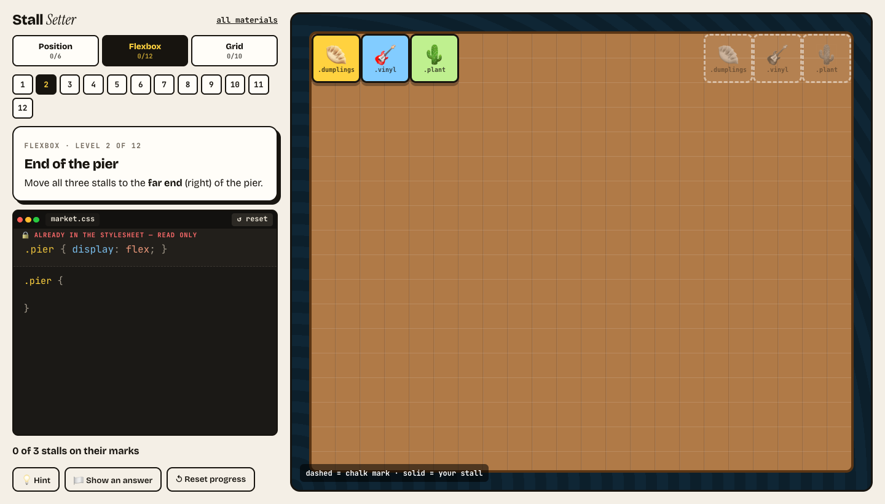

The Harbour Night Market page is nice. It also looks like a receipt.
Everything sits in one long column, top to bottom. Three things are wrong with it:
The Sold out stamps look like text, and the menu vanishes when you scroll.
The menu goes down instead of across, and the “Find the stall” links sit at random heights.
Six vendors in one long column, where the stalls should stand in rows. And the map is missing.
git pull the exercises repo (or download the ZIP again) and open 03-layout/index.html.
Where we start · press 0–4 inside the page
Same HTML, same outfit. One file apart.
The plan · 3 hours
Four ways to place a box
Act 1↓Flowthe layout you already have
Act 2📌Pin itposition
☕Break15 min
Act 3↔Line them upflexbox
Act 4▦Draw the floor plangrid
Finale🏮Open the marketyour layout.css
Every box is placed by one layout algorithm. The parent's display and the box's own position pick which. One question every act: who decides the width?
↓
Act 1
Flow
0:05 – 0:35the layout you already have
cascade recapblock & inlinewidthheightbox model
Warm-up · last time's cascade, today's problem
Flex or block?
block. (0,1,2) beats (0,1,0), even though yours comes later. Your layout "does nothing": DevTools shows it crossed out.
① origin & !important→② specificity→③ order
How would you win without ids or !important? Hold that thought: it's case 6 in Exercise 1. Layout properties are ordinary properties: display, width, position go through the same tournament.
Live · drag the window width · then uncomment one line at a time
How wide is a block? How tall?
The rule of flow
Width flows down
section · 900px
.card · fills it
p · fills that
A block fills its parent. The parent knows its width first.
Height grows up
section · sum of its children
.card · sum of its children
p · 2 lines of text
A block is as tall as its content. The children know first.
height: 50% asks the parent, but the parent is waiting for the child. Nobody knows, so the browser ignores it.
Deeper · CSS Sizing · the vocabulary for the rest of today
Every box knows two sizes of its own
fit-content = min(max-content, max(min-content, available)) — the “shrink-to-fit” width of absolute boxes, inline-blocks and floats. Flex items start at max-content and shrink to a min-content floor; auto grid tracks sit between min- and max-content.
Limits · width and height
Set limits, not sizes: min- and max-
max-width: grow with the space, but stop here. The readable column, the image that never overflows (max-width: 100%).
min-width: shrink with the space, but never below this. Same pair for height: min-height, max-height.
Conflict? min beats max beats width. Shortcut: width: clamp(20rem, 50%, 36rem).
The most common layout on the web · drag the window
Leftover space goes somewhere
By default margins are 0: the box sits at the left, and all the leftover ends up on the right (the end side).
An auto margin claims the leftover. On one side it pushes the box away: margin-left: auto → right.
On both sides it splits the leftover in two: margin-inline: auto → centred. With max-width, the classic column.
Box model · the traps, and the mechanism behind trap 2
Why 40px too wide? Why did the margin leak?
trap 1 · sideways scroll
Width is the content: 100% + 40px.
trap 2 · margin collapse
Adjacent vertical margins collapse: max, not sum (with negatives: biggest positive + most negative). 30. And a first child's margin leaks through a parent with no padding/border.
the mechanism · BFC
Collapsing happens inside one block formatting context. Start a new one and nothing collapses through it. So do flex and grid containers.
Bonus trap: padding: 10% is 10% of the containing block's width — even padding-top. (That's how the old 16:9 video hack worked; today: aspect-ratio.)
your turn
Exercise 1 · solo · 10 min
Flow detective
Seven bugs from the market page. Each is one of: width flows down, height grows up, the box model, intrinsic sizing, or the cascade.
Predict what's wrong before you touch the code.
Fix it. The chips turn green when the case is closed.
Cases 1–4 in class. 5–7 if you finish early.
The repo you pulled during the intro → 03-layout/index.html → Exercise 1. The blue labels show every box's size.
Why we leave the flow
Flow is great for documents. It can't say “put this there.”
📌 pin it to a spot → position↔ line up side by side → flex▦ rows and columns → grid
Problem 1 · the stamps look like text, the menu vanishes
Where this act is going
One property, five behaviours
position: where is it measured from?
value
in the flow?
top / right / bottom / left measured from
use it for
static
yes
nothing: offsets are ignored
the default
relative
yes
its own seat, which stays reserved
small nudges · an anchor for children
absolute
no
the nearest positioned ancestor · none? the first screen of the page
stamps, badges, pins
fixed
no
the window
back-to-top, cookie banners
sticky
yes
the window, once you scroll to it
headers, table heads
position · 1 of 5 · the default
static: just the flow
Every element starts here. The box sits where normal flow puts it.
top, right, bottom, left are ignored. So is z-index (except on flex/grid items).
Not an anchor: absolute children look past it.
position · 2 of 5
relative: move it, keep its seat
Stays in the flow. Offsets nudge it from where it would have been.
The space it left stays reserved: nothing around it moves.
Its real job: an anchor for absolute children (with no offsets it moves nothing).
Predict · place your bets
Where does the stamp go?
The badge lives inside a vendor card, somewhere in the middle of the page.
A · top-right of the cardB · top-right of the pageC · stays where it was
B. It flies to the top-right corner of the page (precisely: of the first screen, the “initial containing block”). Nobody told it which box to measure from.
position · 3 of 5
absolute: out of the flow, pinned to an anchor
Removed from the flow: the card closes the gap, as if the badge weren't there.
Offsets are measured from the nearest positioned ancestor (else the first screen).
Shrinks to its content. left + right stretch it.
position · 4 of 5 · scroll the preview
fixed: pinned to the window
Out of the flow, measured from the viewport. Scroll: it stays put.
Its parent's position doesn't matter…
…unless an ancestor has transform, filter or contain: then it is trapped there.
position · 5 of 5 · scroll the preview
sticky: flow first, then it sticks
Behaves like relative until you scroll it to its top value; then it sticks.
It sticks only while its parent is on screen: the next section pushes it away.
Needs top (or bottom). Breaks if an ancestor has overflow: hidden.
The badge asks each ancestor: are you positioned? No one says yes → the first screen of the page (the initial containing block).
Also an anchor: any ancestor with transform, filter, perspective, contain: layout/paint, container-type… — and for fixed, those are the only anchors besides the window.
Who decides the width? · absolute
Out of the flow, width stops flowing down
An absolute box is as wide as its content. Give it both left and right and it stretches between them. inset: 0 = all four = fill the anchor.
z-index · 1 of 3 · when boxes overlap
Overlap: who's painted on top?
Among boxes of the same kind, later in the HTML paints on top: .c covers .b covers .a.
Positioned boxes paint above normal ones — even when the normal one comes later.
No CSS needed for any of this: it is the default paint order.
z-index · 2 of 3
z-index: bring one forward
Only works on positioned elements (and flex/grid items). On a normal block it does nothing.
Default auto. Bigger number = closer to you. A tie → HTML order decides.
Negative values go behind the normal content of the page.
z-index · 3 of 3 · deeper · stacking contexts
Why z-index: 9999 loses to 10
A stacking context seals its children into one layer: transform, filter, opacity < 1, isolation: isolate, position: fixed/sticky, a positioned element or flex/grid item with a z-index, container-type… Inside, 9999 is huge; outside, the whole layer sits at 0 — below 10.
your turn
Exercise 2 · solo · 12 min · core 1–3 + 5 · bonus 4, 6
Pin it
The stamp on the card's corner. Relative parent, absolute child.
The menu that runs away: sticky. Then scroll: who's painted on top?
You are here: the 📍 on the map's entrance.
z-index: 9999 still loses: fix the stacking context, not the number.
Bonus:Back to top (fixed) · the fixed button that scrolls away.
03-layout → Exercise 2 · Pin it. Press ◌ target in an editor to see the chalk outline of where it should go. Done? Stall Setter · Position, six levels.
Break time
After the break: flexbox. And a mystery to take with you: margin-top: auto does nothing in normal flow — yet in flex, that one line fixes the wobbly links on the cards. Why?
flex-direction picks the main axis. Turn it, and justify and align swap jobs.
Live · every button is one declaration
Flex lab
Predict
Centred vertically or horizontally?
A · verticallyB · horizontallyC · both
B · horizontally. In a column the main axis points down, so align-items (across) is horizontal. For vertical: justify-content: center.
your turn
Exercise 3a · solo · 8 min · a game
Stall Setter · Flexbox

Put every stall on its chalk mark. Any CSS that lands them all counts.
Levels 1–8 now. 9–13 at home.
Stuck? 💡 Hint. Really stuck? 🏳 shows an answer: type it yourself anyway.
03-layout → Stall Setter → Flexbox.
Problem 2 · the links sit at random heights
Same-height cards, wobbly links
Mystery solved: in flow there is no free height (height grows up from content). The cards are stretched by the flex row, so each column has free space — and an auto margin takes all of it, before justify-content gets any.
Two things every flex user gets wrong
The shorthand, and pixels vs Tab order
the shorthand
initial
0 1 auto
content-sized, may shrink
flex: auto
1 1 auto
content-proportional
flex: 1
1 1 0%
equal shares
flex: none
0 0 auto
rigid
order ≠ reading order
order, row-reverse, column-reverse (and grid placement, dense) move pixels. Screen readers and Tab follow the DOM.
WCAG 1.3.2 meaningful sequence · 2.4.3 focus order. If the order means something, change the HTML.
Deeper · who decides the width? · flex items
Basis first. Then grow by share, shrink by weight.
① container 900 · start from flex-basis: 200 + 300 + 250 = 750
A 200
B 300
C 250
150 free
② grow 1 : 2 : 0 → free space split by share: +50, +100, +0
A 250
B 400
C 250
③ container 600 → −150 · shrink 1 : 1 : 1 weighted by basis → −40, −60, −50
A 160
B 240
C 200
← bigger items shrink more
Good to know: only the content shrinks, never padding or border. An item never gets narrower than its longest word. And flex: 1 means “start from zero, share everything”, so all items end up equal, unless a long word stops one from shrinking.
Deeper · the #1 flex bug in production
Why won't it truncate?
The flex item is .info, and flex items default to min-width: auto = their min-content. Its nowrap title makes that the whole sentence, so .info refuses to shrink and shoves the button out. min-width: 0 on the item removes the floor.
Problem 3, first attempt · stalls in rows
Wrap them? Look at the last row.
Flex lays out each line on its own. The two cards on the last line grow to fill it. Columns don't line up across lines. That's a job for grid.
your turn
Exercise 3b · solo · 10 min
Line them up
Logo left, menu right: two flex containers.
The wobbly links: a column, and an auto margin.
Centre the hero: which axis is vertical in a column?
The name that won't truncate: the automatic minimum.
Bonus: the footer (wrap) · the subscribe row (flex: 1).
03-layout → Exercise 3 · Line them up. Before typing, ask: ① who is the parent? ② along or across?
minmax(16rem, 1fr) · one column: never narrower than 16rem, and takes a share of what's left
repeat(auto-fill, …) · as many of those columns as fit in the row
Wide screen → more columns. Phone → one. Responsive, without a media query.auto-fit collapses empty tracks, so 2 items on a wide screen stretch; auto-fill keeps the empty columns.
Live · drag the window width
Columns come and go
Placing items · the numbers are lines
Grid counts lines, not cells
1 / -1 = first line to last line · span 2 = two tracks from wherever you land · 4 columns have 5 lines.
Problem 3 · the map
Draw the map with words
Both children in cell 1/1: they overlap, later paints on top. Unlike absolute, the caption still takes part in sizing: a long caption makes the hero taller instead of spilling out.
Deeper · the wobbly links, solved at the grid level
subgrid: children line up across cards
Each card spans 4 rows of the outer grid and uses those rows for its own children. Now every title, every text and every link shares one row line across all cards. Flex could only push the links down.
Who decides the width? · grid items
The track decides. The item stretches.
By default a grid item stretches to its cell, both ways — and a stretched item has a definite height, so height: 100% inside it finally works (the payoff from “height grows up”). justify-items / align-items give the size back to the content. place-items: center = both at once: the famous two-line centring.
The question you'll ask every day
Flex or grid?
on the market page
use
because
nav links · logo + nav
flex
one line of things, sized by their content
inside a card · the hero
flex
one column, push the last item down
the vendor cards
grid
rows and columns that must line up
the map · the form
grid
a drawing, two dimensions
They nest: a grid of cards, and each card is a flex column. Not a contest — a toolbox.
your turn
Exercise 4 · solo · 11 min
Draw the floor plan
The magic line, from memory. Then drag the width.
The star stall: two columns wide.
Draw the map: grid-template-areas from the floor plan.
Line up the insides: subgrid.
Bonus: the form (max-content) · a caption on a photo without position.
03-layout → Exercise 4 · Draw the floor plan. Done? Stall Setter · Grid and Deep cuts.
Exercise 5 · solo · 15 min · your project · recap by building
Rebuild the lecture in layout.css
Flow
box-sizing reset
main max-width + auto
hero min-height
Position
stamps on corners
sticky header
📍 on the map
fixed ↑ button
Flex
header + nav in a row
card links at the bottom
hero centred
Grid
the magic line
featured spans 2
the map, in words
stretch: form, @media
One act at a time, from memory — then check yourself against that showcase step (1 → 4). Stuck? The exercise page of that act has your solution.
Copy 03-layout/project/starter/ out of the repo → css/layout.css. In class: Acts 1–3 + the magic line; the map and the form at home.
The question of the day, answered
Who decides the width?
algorithm
width ⟷
height ↕
in the flow?
flow
the parent: fills it
the content
it is the flow
absolute
fit-content · or left + right
the content · or top + bottom
no: measured from its anchor
flex item row
basis, then grow (share) / shrink (weight), floor min-content
stretches to the line
yes, along one axis
grid item
its track (stretch) · 1fr floor min-content
its track (stretch)
yes, in its cell
Flex column? The two swap: height from content + grow, width stretches.
Same width, same margin: auto, four different answers. When a layout surprises you, first ask: which algorithm is in charge?
Exit ticket · answer on paper, then reveal
Three questions before you go
A position: fixed modal lives inside a card with transform: scale(1). Scroll. What happens? it scrolls away: the card is its containing block
In flex-direction: column, which property centres items vertically? justify-content
A 600px flex row, three items with flex-basis 200, 300, 250, default shrink. Widths? 160 · 240 · 200
Today: flow · pin it · line them up · draw the floor plan · open the market.
If there's time · a preview · drag the window below 640px
Same areas, redrawn for a phone
@media asks the window. Its modern sibling @container asks the nearest query container (an ancestor with container-type: inline-size): a card that adapts wherever you drop it — sidebar or main column.
Until next time
Homework & reading
Homework
Finish layout.css: every item on the Exercise 5 checklist.
Submit on Google Classroom before next time: a zip of your starter/ folder or a link to your repo.
Stall Setter: the rest of Flexbox, all of Grid, Position and Deep cuts (weighted shrink, blowout, auto-fit, dense, named lines, trapped fixed).